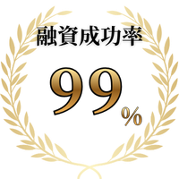

理美容室を開業したいけれど
何から始めればいいかわからない方へ
理美容室に特化した開業サポート
物件探し・融資・デザイン・内装工事まで
窓口ひとつで、サロンワークを続けながら進められます

ご希望の開業時期から逆算したスケジュールをご提案
まずはLINEで無料相談内装工事をご契約いただくまで、ご相談は無料です。
理美容室の開業に必要な工程をまとめて支える
B-MADEの6つの強み
ご希望の開業時期から逆算し、今やることを整理。状況に応じて最短スケジュールをご提案します。
自己資金やご希望の店舗規模を確認し、無理のない資金計画と融資準備を一緒に進めます。
窓口を一本化し、業者との調整負担を軽減。働きながらでも準備を進めやすい体制を整えます。
給排水・ガス・電気容量など、サロン開業に必要な条件を確認し、契約前の判断をサポートします。
開業後の運転資金を残せるよう、優先順位を整理しながら仕様と工事費を調整します。
お客様の過ごしやすさとスタッフ動線を考えながら、サロンらしさが伝わる空間をご提案します。
ご希望や現在の状況を伺い、開業までの全体スケジュールを整理します。必要な準備と概算予算を確認できます。
サロンコンセプトや席数、ご希望のエリアに合わせて物件を検討し、資金計画も並行して進めます。
お客様の過ごしやすさとスタッフ動線を意識したレイアウトをご提案し、理想のイメージを具体化します。
物件・資金計画・デザイン内容をご確認いただき、物件契約と内装工事契約へ進みます。
必要に応じて、サロン運営に使用するロゴ・ホームページ・サインなどを準備します。
内装工事を進めながら、進捗や変更点を共有します。追加費用が生じる場合は、内容をご確認いただいたうえで調整します。
保健所検査に必要な設備や準備物を事前にご案内し、検査当日までサポートします。
東京・神奈川・千葉・埼玉・茨城・群馬
理美容室の物件探しから店舗デザイン・施工まで対応
開業したオーナー様の声
YOUTUBEで発信中